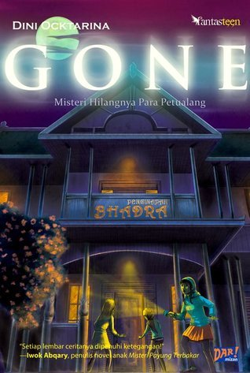
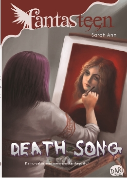
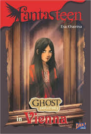

TOP 3 REKOMENDASI NOVEL FANTASTEEN YANG WAJIB KAMU BACA |
|
|---|---|
| Untuk pembelian novel fantasteen dapat di klik di sini | |
|
rekomendasi novel remaja terbaik dengan tema kisah cinta romantis 10 rekomendasi novel horor terbaik terbaru 2023 5 rekomendasi novel komedi yang bikin susah berhenti ketawa 10 novel genre thriller terbaik sepanjang masa 24 novel sci-fi modern terbaik untuk di baca sekarang |
1.Gone:Misteri Hilangnya Para PetualangDalam novel berjudul Fantasteen Gone, karya Dini Ocktarina yang berjumlah 216 halaman ini menceritakan tentang Sheryl, seorang gadis, dan teman-temannya mengunjungi Kota Yogyakarta sebagai perjalanan wisata. Kejadian aneh terus terjadi saat mereka tiba di penginapan. Tujuh remaja dari Bandung terlibat dalam peristiwa yang tidak biasa itu. Satu di antara mereka secara tiba-tiba menghilang di taman belakang penginapan tersebut. Mereka langsung bergegas untuk mencarinya. Empat dari mereka, termasuk Sheryl, terperangkap dalam masa lalu tanpa diduga. Sheryl dan rekannya tidak menduga jika mereka terlibat dalam permainan. Dalam permainan, Tian yang tampan telah menarik perhatian seorang gadis misterius bernama Wily. Karena Wily mirip dengan Sheryl, sulit untuk dipercaya. Mereka menerima banyak kejutan selama perjalanan malam itu. Bisakah Sheryl memiliki keberanian untuk mengembalikan Tian? Siapa sebenarnya Wily? Apakah Tian, Sheryl, dan orang lain dapat kembali ke masa sekarang? Kisah yang menegangkan dan menyeramkan ini menarik pembaca karena alurnya yang seru. Selain itu, bahasa yang digunakan juga mudah dipahami. Kisah ini lebih dari sekadar petualangan remaja yang penuh teka-teki dan ketegangan. Kisah tersebut memiliki makna yang mendalam yang dapat memberi pelajaran kepada pembaca, yaitu bahwa kita harus selalu berpikir terlebih dahulu sebelum melakukan apa pun supaya kita tidak merugikan orang lain atau diri kita sendiri. Buku ini hanya tersedia di Gramedia bagi mereka yang tertarik dengan kisah lanjutan Sherly dan teman-temannya. 2.Death SongKertas berwarna merah darah itu terselip di antara kanvas. Isinya adalah gambar seorang wanita yang sepertinya aku mengenalnya. Karena rasa penasaranku, kuputuskan untuk membawa pulang kertas merah itu dan menyimpannya. Anehnya, banyak mawar hitam yang mengerubungiku keesokan harinya. Tidak hanya itu, aku juga dihantui sosok perempuan berjari kurang. Ternyata kemunculan kertas itu juga diikuti teror maut di sekolahku. Beberapa orang mati setelah menyanyikan lagu itu. Apa yang sebenarnya terjadi? Tanpa dapat kukontrol, sesuatu seolah memberitahuku beberapa petunjuk. Dan bisikan itu membawaku pada satu kesimpulan: Wanita dalam kertas merah itu membawa kutukan. Ini adalah uraian singkat dari novel yang memiliki 176 halaman. Novel dari Sarah Ann yang berjudul Death Song menggabungkan elemen fantasi dengan kisah remaja dengan sangat apik. Sarah Ann membuat karakter yang kuat dan berwawasan dengan cara yang membuat pembaca terlibat emosional dengan perjalanan mereka. Selain itu, "Death Song" adalah buku yang sulit untuk ditinggalkan karena alur ceritanya yang rumit dan plot twist yang tak terduga. Secara keseluruhan, Sarah Ann berhasil memberikan pengalaman membaca yang menarik bagi penggemar fantasi remaja 3.Ghost Dormitory In ViennaEureka Bernstein tidak dinamai seperti itu kalau Tuhan tidak memaksudkannya untuk mengalami sesuatu. Kemiripan namanya dengan Ethel Bernstein, salah satu putri Vienna, bukan hanya kebetulan semata. Bahkan, semua semesta yang dialami Ethel juga dialami Eureka. Ketika Eureka benar-benar datang ke bekas kastil Ethel, secara misterius ditempatkan di kamar telarang di ujung lorong, dan entah bagaimana caranya bertemu biola tua itu?sejarah akhirnya terulang. Semua balas dendam, semua rasa sedih, semua perasaan cemburu, membuat arwah Ethel yakin bahwa Eureka perlu tahu bagaimana masa lalunya yang kelam. Sekaligus memberi tahu pada seluruh dunia, Ethel tidak pernah pergi meninggalkan semesta ini. Apa yang harus Eureka lakukan sekarang, ketika semua teman terdekatnya berada di bawah ancaman dan nadi kehidupannya sendiri setipis kabut? Kematian memang tinggal sejengkal lagi jaraknya dari Eureka. Namun dia tetap bisa memilih, akankah dia menyerah, atau justru berjuang? Buku 180 halaman menceritakan kehidupan Eureka Bernstein. Dia tinggal di sebuah asrama yang ditinggali oleh kastil Ethel. Di sana, dia bertemu dengan Isla Waillin dan Nino Sandoval. Mungkin ada sesuatu yang membedakan cerita ini dari yang lain. Esa berhasil menyampaikan informasi bermanfaat tentang Austria di setiap kalimat.Sayangnya, Esa tidak memberi tahu kami alasan yang jelas mengapa Eureka tidak diizinkan masuk ke Tempat Maria von Trapp. Pembaca diajarkan berbagai bahasa di novel ini yaitu Inggris, Perancis, Jerman. lengkap dengan penjelasan tentang apa arti kalimat dalam novel. Ghost Dormitory In Vienna adalah novel horor yang sudah membuat pembaca merinding dan membuat mereka ingin segera menyelesaikannya. Sebagai hasil dari penjelasan karakter yang sangat rinci yang dia berikan, pembaca dapat dengan mudah memahami bagaimana karakter-karakter yang ditampilkan dalam novel tersebut. Itulah 3 judul novel fantasteen yang saya ingin rekomendasikan kepada para pembaca. Ketiga novel tersebut dapat di beli di toko buku Gramedia dan toko buku online yang ada di e-commerce, dengan kisaran harga mulai dari Rp 35.000 Sekian informasi yang saya berikan, saya berharap dapat berguna bagi kita semua. Terima kasih |
| Ingin membaca rekomendasi novel lainnya dapat di lihat di Instagram Nasywa Qaila Azvi | |